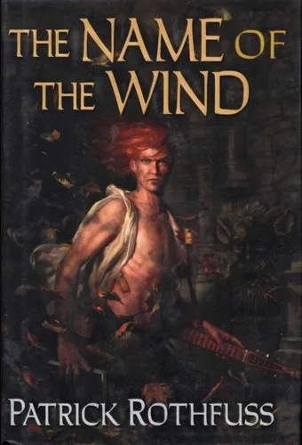
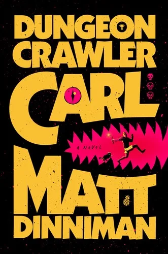

Data Science · · 13 min read
The Wedding Seating Plan, Live
Thirty wedding guests from books I've read, six tables and five feuds: seat them yourself, or let hill climbing and simulated annealing have a go.
The Wedding Seating Plan, Live
I'm not a wedding planner by any means, so I had to look up the fact that the average wedding in the US in 2025 had 117 guests, according to The Knot's survey of more than 10,000 couples who got married that year[1]. That's 117 chairs, and unless you're letting everyone sit wherever they like (which I recommend personally), you're going to have to consider "Hm, Donut has to sit with Carl no matter what, and Rosie and Sam should be together but if Jaskier and Geralt are together, we will never get to the speeches" etc, etc. Whoever works that out is solving an optimisation problem, which makes the whole ordeal feel a bit more like a fun puzzle, at least to me. Rhyd Lewis and Fiona Carroll showed in 2016 that making a seating plan is NP-complete[2].
This is the first post in a new series, Optimisation for Normal Problems, where the search algorithms from my Algorithms, Live posts get pointed at the kind of problem people have at home. I did my PhD on rostering BT's engineers, and a seating plan is the same sort of puzzle: people, places to put them, and rules about who can go where. Below there's a wedding featuring 30 guests from various books I've read, six tables and a score, and you can move the guests around yourself or hand the job to the computer.
Quick jargon guide
- Complaints: this demo's score for a seating plan. Lower is better.
- Move: one small change to a plan. Here, two guests on different tables swap seats, or a couple swaps with another couple (or with two people sitting on their own).
- Local search: start from any plan and keep making moves that improve it.
- Hill climbing: local search that only keeps a move if the plan is no worse. The score here goes down, so it's really hill descending, but nobody calls it that.
- Local optimum: a plan where every move makes things worse, even though a better plan exists somewhere else.
- Simulated annealing: local search that sometimes keeps a worse move on purpose, more often while its temperature is high.
- Temperature: how willing annealing is to keep a worse move. It drops a little after every move.
- NP-complete: a family of problems that nobody knows how to solve both quickly and perfectly every time as they get bigger.
The guest list

The bride and groom are at the top table, so they're not part of the problem (Lewis and Carroll's planner takes the top table out first, too[2]). That leaves 30 guests for six round tables of five. The bride is Ciri from The Witcher, and seven of them are her family, including her gran Calanthe, her mum Pavetta, her dad Duny, and Geralt and Yen, who brought her up. The groom is Sam Gamgee's son Frodo (yes, he named this son after Frodo), so six are hobbits: his mum Rosie, his dad Sam, his grandpa the Gaffer, his sister Elanor, Elanor's husband Fastred and their son Elfstan. Six are pals from uni, the University in The Kingkiller Chronicle (Denna never studied there, but she turned up often enough), and six are from work, at House Atreides in Dune. The last five are Kvothe, who knows some of the uni lot, his plus-one Auri, who knows nobody but Kvothe, and Carl, Donut and Mongo from Dungeon Crawler Carl. Carl and Mongo sing karaoke with Fastred once in a while.
There are nine couples, counting Carl and Donut, and five feuds. Calanthe won't sit with Geralt, who claimed Ciri by the Law of Surprise, or with Yen, who helped him bring her up. Kvothe and Denna never quite got together at uni, and they fell out over a song. Thufir and Jessica haven't spoken since he decided she was the traitor. Duny and Sam had words at the engagement party over the last of the mushrooms. Everyone in the four big groups counts as friends with everyone else in their group, except anyone who's fallen out, and Geralt and Yen, who only know each other. Quite the tangled web, right? And think, this is only 30, and we have all the information. In reality you'd send out the invites then complaints would pour in despite your best efforts.
How the demo scores a plan
Every plan gets a number of complaints, less = better:
- 10 for every couple sat at different tables
- 10 for every feud sat at the same table
- 3 for every guest who knows nobody at their table
- 1 for every pair of friends at different tables
These are just numbers I made up, of course. The only rule I had was that splitting a couple or sitting a feud together should cost a lot more than anything else. Bellows and Peterson, who used a computer to seat the guests at their own wedding, did something similar: two guests who knew each other got a connection of 1, and a guest and their date got 50, so that the model wouldn't split them up[2][3].
A score of 0 isn't possible here. The groom's family, the uni lot and the work lot are six people each, and the tables seat five, so somebody from each of them gets split off before any feud is even considered.
There are \(\frac{30!}{(5!)^6} = 88{,}832{,}646{,}059{,}788{,}350{,}720\) ways to put 30 people at six numbered tables of five (Lewis and Carroll give the formula[2]). Checking a million of them every second, you'd be done in about 2.8 million years, which might make you a tad late for the wedding. Exhaustively trying every possible combination is a bit silly, anyway, so what people do instead is a local search: start with any plan, change it a little, keep the change if it helps, and go again, tens, hundreds, or thousands of times.
Hill climbing and simulated annealing
The simplest local search is hill climbing. Swap two guests, and if the plan has no more complaints than it did, keep the swap. If it has more, swap them back. Do that over and over and the complaints only ever go down or stay put. The trouble is it only looks one move ahead, like walking downhill in thick fog, so it stops at the first plan where every swap makes things worse (a local optimum), even when a much better plan is a few swaps away.
Simulated annealing is hill climbing that will sometimes keep a worse plan, deliberately, to get out of a local optimum. The name comes from metalwork: heat metal up and cool it slowly, and its atoms have time to settle into a more orderly arrangement, with fewer flaws, than if you cooled it fast. Here the temperature is how willing the search is to take a worse move. It starts hot, when it'll take plenty, and cools a little after every move until it takes none, and by then it's a hill climber again. Kirkpatrick, Gelatt and Vecchi brought the idea over from physics in 1983[4], and my simulated annealing post has the full story.
Here are the two of them side by side, on a landscape you can see:
Each point along the bottom is a different plan, and lower means fewer complaints. Both start from the same plan and try the same kind of move. When both have stopped, a new landscape starts. A real seating plan has far more directions to move in than left and right, but it works the same way.
The seating plan
Below, the guests start in a random shuffle. The computer waits for you: have a go by hand first, then press Play.
Drag a name card onto another to swap those two guests, or tap one card and then the other. From the keyboard, focus the plan, move the cursor with the arrow keys and press Enter on each card. Cards are tinted by where the guest comes from: the bride's family, the groom's family, uni, work and everyone else. A dashed red line joins a couple on different tables, a solid red line joins two people who've fallen out and are sitting together, and a dashed red outline is a guest who knows nobody at their table. A picked guest is joined to their friends in grey and to their feuds in red. Complaints is the score, and the four tiles after it are what it's made of. Changing Fixer, Couples move together or Starting temperature starts again from the same shuffle; New shuffle deals a different one.
Things to try
Try it by hand! The starting shuffle has 210 complaints: all nine couples are split up, 20 guests know nobody at their table, 50 pairs of friends are apart, and Duny and Sam are at table 4 together. Start with the couples, they're 90 of the 210.
Press Play. (Press Start again first if you've moved anyone.) The fixer starts as hill climbing. Each move, it picks a guest and someone on another table and swaps them. It gets from 210 to about 30 in the first two seconds and then slows right down. After 642 moves it stops at 24. The Gaffer is at table 3 with Yueh, Jessica, Leto and Duncan from work, none of whom he knows, while the rest of his family is at table 5. Before it gives up it tries every move there is, and
Now switch Fixer to simulated annealing. It starts again from the same shuffle. A move that adds \(d\) complaints is kept with probability \(e^{-d/T}\), where \(T\) is the temperature, which starts at \(T = 2\) and loses \(0.15\%\) every move. Early on it'll keep a move that costs \(d = 2\) complaints about a third of the time (\(e^{-2/2} \approx 0.37\)). Once \(T\) is down to \(0.2\) it keeps nothing worse. On the default shuffle it gets to 22 after 1,548 moves. It took a worse plan 13 times on the way down, never by more than 6 complaints, so look for small bumps in the red line on the chart while the blue best-so-far line sits still.

The Gaffer's back with his family in the 22 plan, but now Thufir is on his own. He's at table 3 with the groom's family, the one guest in the room who knows nobody at his table (we've all been there, Thufir), because the work table has Jessica at it. Fastred and Elanor have moved in with Carl, Donut and Mongo, and Devi from uni is sitting with Geralt, Yen, Kvothe and Auri.
Play with the temperature and shuffle a few times. At \(T = 0\) it's hill climbing. From a hot start, at \(T = 20\), it spends the early part moving people about more or less at random, so on average it takes nearly twice as many moves to finish as it does from \(T = 2\).
Untick Couples move together. By default, when the fixer picks a guest whose partner is at the same table, the partner comes too, and the pair swaps with another couple or with two people who are there on their own. With it unticked, the fixer moves one guest at a time, the way you do by hand. Now a couple takes two moves to get anywhere, and the first one splits them up for 10 complaints. Hill climbing never keeps that move, and annealing at \(T = 2\) keeps a move that costs \(d = 10\) about \(0.7\%\) of the time (\(e^{-10/2} \approx 0.007\)). On the default shuffle hill climbing gets stuck at 41 and annealing stops at 31. Over 20 shuffles neither of them reached 22 once (their medians were 40 and 37), and hill climbing with couples moving together beat annealing without it on all 20.
Lewis and Carroll's planner works the same way round: couples and families with young children go in as one guest group, and it seats groups, which also makes the problem smaller[2].
Start a feud. Set Tapping two guests to starts or ends a feud. On the default shuffle, let annealing finish at 22, then tap Rosie and then Thufir. They've fallen out and they're at the same table, so the plan jumps to 32. Press Play: annealing heats back up from there, and finishes at 24 after 3,074 moves in all. Thufir joins Duncan, Yueh and Gurney from work, Jessica and Leto move to Devi's table, and the Gaffer is back at the work table with people he doesn't know.
A feud between two people on different tables is stranger. Get back to the 22 plan (Reset the feuds, Start again, then run annealing), and tap Simmon and then Devi. They've fallen out, and the complaints go down to 21. The score counts two friends at different tables as a complaint and two enemies at different tables as nothing, so a row between two people who were never going to sit together counts as an improvement. (I could make the score count a friendship that's turned into a feud, but I haven't.)
What the real planners do
Bellows and Peterson wrote their wedding up as an integer program, 107 guests and 11 tables, and gave it to CPLEX. It ran for 36 hours. It found a plan that worked, but it couldn't prove there wasn't a better one[2].
Lewis and Carroll built theirs for weddingseatplanner.com (which, in 2016, needed Adobe Flash). You mark any two groups as Definitely Apart, Rather Apart or Rather Together, and it runs tabu search in your browser, usually in under three seconds. They also tested it against an integer programming solver on the same problems. Of the 119 where both found a plan with no feud at a table, tabu search found the better one 94 times and the solver 6 times, and the solver needed more than 400 times as much computer time[2]. If feuds are all you care about, finding a plan with none at a table is graph colouring: every guest is a dot, every feud is a line between two dots, every table is a colour, and no line may join two dots of the same colour[2].
Common questions
Couldn't you just check every plan?
Not for 30 guests. There are about 89 billion billion (\(8.9 \times 10^{19}\)) ways to seat them at six numbered tables of five, and at a million a second that's about 2.8 million years. Lewis and Carroll's example of 48 guests at six tables of eight has about \(\frac{48!}{(8!)^6} \approx 2.9 \times 10^{33}\)[2].
Why does the best plan leave Thufir on his own?
Because of Jessica. Thufir can't sit with her, she comes with Leto, and the work table only seats five, so somebody leaves it. Sending Thufir away costs 7 complaints (3 because he knows nobody where he ends up, and 4 for the work friends he's apart from), and sending Jessica and Leto away instead costs 7 as well, so it comes down to where there's room. Every 22 plan I looked at had him at the groom's family table.
References
- The Knot Worldwide. (2026, February 18). The Knot Worldwide unveils 2026 Real Weddings Study [Press release]. https://www.theknotww.com/press-releases/the-knot-worldwide-unveils-2026-real-weddings-study
- Lewis, R., & Carroll, F. (2016). Creating seating plans: A practical application. Journal of the Operational Research Society, 67(11), 1353–1362. https://doi.org/10.1057/jors.2016.34
- Albert, L. (2013, April 4). How to use OR to plan your wedding. Punk Rock Operations Research. https://punkrockor.com/2013/04/04/how-to-use-or-to-plan-your-wedding/
- Kirkpatrick, S., Gelatt, C. D., & Vecchi, M. P. (1983). Optimization by simulated annealing. Science, 220(4598), 671–680. https://doi.org/10.1126/science.220.4598.671